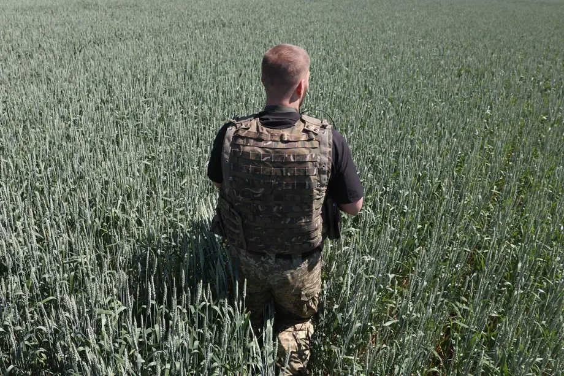

Una situacion que preocupa
Un poco de contexto
Para conocer el contexto hace falta mencionar el origen de estos dos países. Estos se remontan a la caída de la URSS en 1991, donde muchos países actuales se independizaron y formaron sus propios gobiernos. El más extenso y poderoso de estos fue la Federación de Rusia. Este país heredó muchas de las ciudades más importantes de la antigua unión y fue la que más importancia obtuvo en asuntos de alcance internacional.
Desde el final de la segunda guerra mundial, y destacadamente en el periodo al que se le llamó Guerra Fría, las rivalidades entre EEUU y Rusia crecieron a través de los años: Lo que empezó como un conflicto entre sistemas políticos y económicos ahora se transformó en un rivalidad feudal que prácticamente se mantiene debido al orgullo de los dos países. Desde la carrera espacial, la influencia económica y la expansión de sus productos alrededor del mundo; El conflicto entre estos dos países no es algo desconocido para la geopolítica mundial.
En poco tiempo, la Federación Rusa logró recuperarse de la caída de la URSS y se convirtió en un importante país en el ámbito internacional. En los últimos años, con la intención de frenar la creciente influencia de la OTAN (Organización del Tratado del Atlántico Norte) por el mundo, más específicamente cerca de las fronteras rusas, decidió buscar más aliados que puedan ayudarle en su causa. Uno de estos es China, una potencia mundial que, con una economía y producción gigantesca, le hace sombra a Estados Unidos.
La invasion
Al fin y al cabo, lo que se esperaba se cumplió, la OTAN llegó a la frontera rusa. Esto suponía el establecimiento de varias bases militares en la frontera, cosa que por obvias razones, le es incómoda a Rusia. Al no lograr convencer a Ucrania de no entrar en esta alianza militar, el 24 de febrero de este año, el presidente de Rusia Vladimir Putin anunció en un discurso televisado: “He tomado la decisión de llevar a cabo una operación militar especial. Su objetivo será defender al pueblo que durante ocho años ha sufrido persecución y genocidio por parte del régimen de Kiev. Para ello, apuntaremos a la desmilitarización y desnazificación de Ucrania”. Tomando como justificación una supuesta desnazificación de Ucrania (la cual hace referencia al batallon “Azov”, que forma parte de las primeras líneas de combate ucranianas, el cual se identifica con una ideología Ultra nacionalista y Neonazista).
Detrás de esta guerra (y de prácticamente cualquier otra cosa en este mundo) se esconden intereses económicos y comerciales que podrían llegar a afectar incluso a países del otro lado del mundo. Esto es debido a que Ucrania es uno de los principales exportadores de trigo, aluminio y neón (elemento esencial para fabricar semiconductores), por lo que la crisis afecta la oferta de estos productos, haciendo que su precio aumente. Rusia, por su parte, es un gran productor de materias primas, que van desde el petróleo y gas natural hasta el paladio y el trigo. Los dos países fueron afectados, pero el más perjudicado fue Ucrania, que perdió casi la mitad de su territorio; Viéndose debilitada notablemente su industria, su poderío militar y conllevando un gran impacto demográfico en su población, que emigró a los países de alrededor, como Polonia, Moldavia y Rumanía aunque también a países de Europa occidental. Muchas áreas urbanas y rurales fueron destruidas o deterioradas por los constantes bombardeos y saqueos rusos, que actualmente están devastando el país.
Consecuencias en el mercado global
Pese a quien le pese, vivimos en un mundo altamente globalizado y, por lo tanto, interconectado. Desde caídas en la bolsa que en pocos segundos se expanden a través de los mercados mundiales hasta innovaciones tecnológicas que tienen el potencial para cambiar la historia; Las consecuencias que produjo esta guerra en los activos financieros alrededor del mundo no son la excepción a la regla.
Si por algo se caracterizan las etapas bélicas son por hacer caer, generalizadamente, a todos los activos financieros alrededor del mundo y hacer apreciar el valor de los llamados “commodities”.
Definición: Un commodity es un material tangible (usualmente algún tipo de materia prima) que se compra o vende. Normalmente se utilizan como insumos en la fabricación de otros productos más refinados. Un ejemplo de estos serían el oro, la plata, el litio (siendo estos metales), el gas natural, el ganado (y otros tipos de carne), el maíz, el trigo, el arroz, el azúcar, el algodón o la soja etc.

En la imagen de arriba se puede apreciar el índice “Dow Jones Commodity” el cual no es más que un promedio de los precios de los principales commodities. Si se observa el gráfico, los precios sufrieron un aumento generalizado debido a la disminución de la oferta de ciertos productos como el petróleo, el trigo entre otros. Sin embargo, también los llamados “activos reales” se revalorizaron. Entre estos se encuentran el oro, la plata o el cobre los cuales además históricamente sirvieron como activos de reserva de valor en tiempos de crisis.